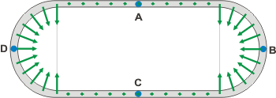

|
NO ME SALEN
PROBLEMAS RESUELTOS DE FÍSICA DEL CBC
(Cinemática vectorial) |
|

|
 |
1.5- Una pista de atletismo consiste en dos tramos
rectos paralelos, de 80 m de longitud cada
uno, y dos tramos en forma de semicircunferencia,
que los conectan por sus extremos para cerrar
el circuito. Los tramos rectos están distanciados
entre sí 40 m, de modo que los tramos curvos
tienen 20 m de radio. Un corredor la recorre con una velocidad de
módulo constante e igual a 18 km/h. |
a - Hacer un esquema de la pista; representar
los vectores velocidad instantánea del corredor:
- en los puntos medios de los tramos rectos
(Puntos A y C)
- en los puntos medios de los tramos curvos
(Puntos B y D).
b - Hallar cuánto tiempo tardará en recorrer el
circuito completo, y cuánto para ir de A hasta B,
y de A hasta C.
c - Determinar el vector aceleración media del
corredor entre los puntos A y C, y entre C y D.
d - Indicar la dirección y el sentido del vector
aceleración instantánea en cada uno de los puntos
indicados.
e - Hallar el vector velocidad media en un recorrido
completo entre A y A, y la velocidad escalar
media entre esos puntos. |
|
Este ejercicio tiene sus preguntas en el orden indicado. |
|
|
 |
Los principales recaudos que tomé para representar las velocidades fueron: primero, que el largo de las flechitas fuera igual en todas, ya que el módulo de la velocidad (la rapidez) es constante. |
|
|
|
Segundo, que la dirección de los vectores fuera siempre (no sólo en este ejercicio) tangente a la trayectoria.
Con esto liquidamos el ítem a), pero podemos hacer algo más, todavía. Podemos hacer una representación analítica de las velocidades en esas cuatro posiciones. Para eso incluí en el esquema un par de ejes que servirán de sistema de referencia.
Voy a expresar la velocidad en metros sobre segundo ya que más adelante lo voy a necesitar para otras operaciones. Si no te acordás cómo se hacen los pasajes, podés consultarlo acá. Como 18 km/h = 5 m/s, tenemos:
vA = 5 m/s î
vB = — 5 m/s ĵ
vC = — 5 m/s î
vD = 5 m/s ĵ
Donde î y ĵ son vectores de módulo 1; se llaman versores y tienen por objeto contagiarle el carácter vectorial a un valor, y decir para dónde apunta. Suelen representarse con un sombrerito o una comita arriba de la letra original . El versor î tiene la misma dirección y sentido que el eje x, y el versor ĵ los mismos que el eje y.
Para responder el segundo ítem tenemos que "rectificar" la pista o -lo que es lo mismo- pensar el recorrido escalarmente. La longitud del recorrido es la suma de los dos trayectos rectos más los dos curvos. Eso me da tanto como Δx = 286 m. (Recordá que la longitud de una circunferencia es más o menos igual a 3,14 veces el diámetro). Entonces
Δt = Δs / v
Δt = 286 m / 5 m/s
|
|
|
|
|
El vector aceleración media en cada tramo resulta de operar con los vectores velocidad que expresé más arriba, de la siguiente manera:
amAC = ΔvAC / ΔtAC =
amAC = (vC — vA) / ΔtAC =
amAC = (— 5 m/s î — 5 m/s î) / 28s =
amAC = — 0,35 m/s² î
y de la misma manera obtenés
amBD = 0,35 m/s² ĵ
Pero ya que estamos podemos calcular algunas aceleraciones medias más... por ejemplo:
amAA' = 0
O esta otra que es más interesante:
amAB = (— 5 m/s î — 5 m/s ĵ) / 14s =
amAB = — 0,35 m/s² î — 0,35 m/s² ĵ
cuyo módulo vale
|amAB| = 0,50 m/s²
Esperá, que recuadro los solicitados: |
|
| |
amAC = — 0,35 m/s² î
amCD = 0,35 m/s² î + 0,35 m/s² ĵ |
c) |
|
|
| Repito el esquema para representar los vectores aceleración instantánea que nos solicita el ítem d): |
|
|  |
Los principales recaudos que tomé para representar las aceleraciones instantáneas fueron: si la velocidad es constante (en módulo y dirección) entonces la aceleración es nula (hice puntitos verdes en varias posiciones para indicarte eso). |
|
|
Luego, en las partes donde la velocidad cambia de dirección, la aceleración siempre (no sólo en este ejercicio) apunta hacia la concavidad de la trayectoria, hacia "adentro". Y por último -aunque esto no tenés por qué saberlo, todavía- si el módulo de la velocidad es constante pero cambia la dirección, entonces el vector aceleración es perpendicular a la trayectoria.
Y ahora viene el ítem e). Para hallar los vectores velocidad media, operamos de la siguiente manera:
vmAA' = ΔrAA' / ΔtAA'
vmAA' = 0 m / 57s
|
|
|
|
Como ves, el vector velocidad media no es muy representativo de lo que hacen nuestros corredores sobre la pista... Es mucho más práctico calcular la velocidad escalar media:
vmAA' = ΔsAA' / ΔtAA'
vmAA' = 286 mm / 57s
|
|
|
|
| (Cosa que ya sabíamos). La velocidad vectorial y escalar se diferencian colocándole una flechita como sombrerito a la vectorial... pero hacer eso en el lenguaje HTML, para INTERNET, no es muy práctico. Te lo debo. |
|
| |
|
|
|
|
|
| |
| DESAFIO: Representar gráficamente los vectores aceleración media del ítem c). Si sabés cómo hacerlo, hacelos en una escala proporcional a los vectores aceleración que dibujé en el segundo esquema. Si no... no importa, basta con que los veas apuntando correctamente. |
|
 |
| |
| Algunos derechos reservados.
Se permite su reproducción citando la fuente. Última actualización may-08. Buenos Aires, Argentina. |
|
|
|